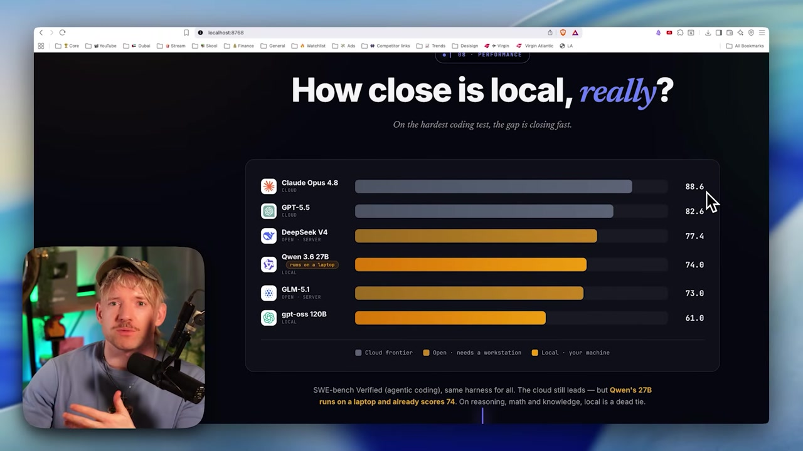

⚖️ O trade-off: privacidade, performance e preco
Nada e de graca de verdade — voce sempre troca uma coisa por outra. Local te da privacidade e custo zero, mas voce paga em performance bruta. Neste modulo voce aprende a LER esse trade-off com olho critico: o que cada eixo ganha, o que perde, e por que "1 ano atras da fronteira" ja e mais do que suficiente para a maior parte do seu trabalho.
🔐 Privacidade: o que voce ganha
Comecemos pelo eixo onde o local ganha de lavada: privacidade. Quando o modelo roda na sua maquina, o texto que voce digita, os arquivos que voce abre e as respostas que voce recebe nunca saem dali. Nao ha servidor de terceiros no meio, nao ha registro guardado por uma empresa, nao ha politica de retencao que possa mudar amanha. O dado e seu e fica seu.
🛡️ Os tres "nunca" do local
- •O dado nunca trafega pela internet — fica entre o teclado e o disco.
- •Nenhuma empresa nunca guarda o que voce pergunta para treinar outro modelo.
- •O acesso nunca depende de um login que pode ser revogado.
Novo aqui? "Trade-off" e quando voce melhora uma coisa as custas de outra — nao existe almoco gratis. Aqui o trade-off central e: voce ganha privacidade e custo, e em troca abre mao de um pouco de performance bruta. O modulo inteiro e sobre medir essa troca com honestidade.
Conceitos-chave
Toda escolha melhora um eixo e cobra de outro; o segredo e escolher de propósito.
O dado nao sai porque nao HA caminho de saida, nao porque alguem promete.
Nenhum log fica num servidor que voce nao controla.
Ninguem corta seu acesso ao seu proprio modelo.
⚡ Performance: o "1 ano atras" da fronteira
Agora o eixo onde o local perde — mas perde menos do que voce imagina. Os melhores modelos abertos que rodam no seu laptop hoje estao, em media, cerca de um ano atras da fronteira (os modelos de ponta na nuvem). A boa noticia: a fronteira de hoje e absurdamente boa, entao "um ano atras" ainda e excelente para a esmagadora maioria das tarefas do dia a dia.
Repare: o modelo local de hoje fica no patamar onde a fronteira estava ha um ano. Como a fronteira de um ano atras ja era otima, o local de hoje resolve quase tudo — e o gap se mantem constante, nao explode.
✓ Onde "1 ano atras" basta
- ✓Resumir, reescrever, traduzir, responder e-mail.
- ✓Rascunhar codigo e explicar trechos.
- ✓Conversar sobre documentos privados.
- ✓Tarefas repetitivas rodando o dia inteiro.
✗ Onde a fronteira ainda vence
- ✗Problemas de raciocinio muito longos e dificeis.
- ✗Tarefas de codigo grandes e cabeludas (ver benchmarks).
- ✗Quando o ultimo 5% de qualidade muda o resultado.
- ✗Quando velocidade da nuvem importa mais que privacidade.
Conceitos-chave
Os modelos de ponta do momento, quase sempre rodando na nuvem.
O atraso tipico do melhor modelo aberto em relacao a fronteira.
Para a maioria das tarefas, "1 ano atras" ja resolve com folga.
O aberto sobe junto com a fronteira; a distancia nao cresce.
💰 Preco: $0 por uso, para sempre
O terceiro eixo: preco. Na nuvem voce paga por token — cada pergunta e cada resposta tem um medidor rodando. Localmente, depois de baixar o modelo uma unica vez, cada uso e gratuito. Nao ha fatura no fim do mes, nao ha "voce gastou X dolares hoje". O unico custo e o hardware que voce ja tem e um pouco de energia.
📊 Custo: nuvem vs local
- •Nuvem: custo VARIAVEL que sobe com o uso (OPEX) — quanto mais voce usa, mais paga.
- •Local: custo FIXO ja pago (o computador) + ~$0 por chamada (CAPEX).
- •Como cada chamada e $0, da pra deixar agentes 24/7 sem medo da fatura — vira o tema do 1.6.
💡 Dica pratica
Como explorar e de graca, baixe, teste e apague modelos a vontade. O "preco" de errar e zero. Trate cada download como um experimento barato, nao como compromisso.
Conceitos-chave
Uso gratuito apos o download — sem medidor.
Investe no hardware uma vez, em vez de pagar por uso recorrente.
Custo previsivel: voce ja sabe que e zero.
O unico "uso" pago e a eletricidade da sua maquina.
📊 Os benchmarks: ler com olho critico
Aqui o trade-off vira numero. O grafico abaixo e o SWE-bench — um teste de resolver problemas reais de programacao. A pontuacao e a porcentagem de tarefas que o modelo resolve sozinho. Quanto maior, melhor. Vale ler com calma: a fronteira ganha, mas o modelo que "roda no laptop" chega perto o bastante para impressionar.
Novo aqui? "Benchmark" e um teste padronizado para comparar modelos com o mesmo regua. "SWE-bench" mede capacidade de resolver bugs/tarefas de software de verdade. O numero e o % de tarefas resolvidas — nao confunda com "nota de prova"; e dificil, e ate a fronteira nao chega a 90%.

🔢 Os numeros reais (SWE-bench, do video)
A leitura critica: o Qwen 3.6 27B, marcado como "runs on a laptop", faz 74.0 — contra 88.6 do Opus 4.8 na nuvem. Sao ~14.6 pontos de diferenca para um modelo que cabe na sua maquina, roda offline e custa $0 por uso. E exatamente a tese do "1 ano atras": perto o bastante para quase tudo.
Conceitos-chave
Teste de resolver tarefas reais de software; % de tarefas resolvidas.
Fronteira (Opus 4.8) vs local (Qwen 3.6 27B): ~14.6 pontos.
O Qwen 74.0 cabe na sua maquina — quase a metade da lista.
14 pontos no papel raramente viram 14 pontos no SEU trabalho.
🐢 Tao rapido quanto a sua maquina
Tem um quarto eixo escondido na "performance": velocidade. Na nuvem, voce aluga GPUs gigantes, entao a resposta sai rapida nao importa o seu computador. Localmente, a velocidade depende inteiramente do seu hardware — chip, memoria e o tamanho do modelo. Um modelo maior numa maquina modesta vai responder devagar; o mesmo modelo num chip forte voa.
O chip faz o ritmo
Um chip moderno (ex.: Apple M com bastante memoria unificada) gera tokens muito mais rapido.
Modelo maior = mais lento
Mais parametros pesam mais; um modelo menor responde mais rapido na mesma maquina.
A escolha e sua
Voce equilibra: modelo menor e rapido para o dia a dia, modelo maior e capaz para a tarefa pesada.
Dica pratica: velocidade local nao e fixa — e ajustavel. Se um modelo esta lento, troque por um menor ou mais quantizado (vamos ver isso na Trilha 2). "Lento" quase sempre quer dizer "modelo grande demais para esse hardware", nao "local e ruim".
Conceitos-chave
A rapidez do local depende do SEU chip e memoria, nao de um servidor.
Modelo maior responde mais devagar na mesma maquina.
Em chips Apple M, RAM e GPU compartilham memoria — ajuda muito.
Trocar de modelo muda a velocidade — "lento" tem conserto.
🧩 Dividir o trabalho em porcentagens
A conclusao pratica do trade-off: voce nao escolhe um lado. Voce divide o trabalho. Imagine 100% das suas tarefas com IA. Uma fatia exige privacidade absoluta — vai de local. Outra exige a melhor resposta possivel — vai de fronteira. Outra so precisa ser rapida e barata — local de novo. Cada fatia tem a ferramenta ideal, e o segredo e rotear conscientemente.
A barra inteira e o seu trabalho. A maior parte cai no local (privacidade, custo, dia a dia); a fatia da fronteira entra so quando o ultimo 5% de qualidade muda o resultado. Roteirizar essas fatias e o que o Hermes faz com os tres modos.
🧭 Ponte para o proximo modulo
Essa divisao em porcentagens nao fica na teoria. No modulo 1.6 ela vira os tres modos concretos do Hermes — Vault (tudo local), Connected (meio-termo) e Cloud (qualidade maxima). Voce vai aprender quando usar cada um.
Na Trilha 3 voce monta na pratica o fluxo que alterna entre eles conforme a sensibilidade da tarefa.
Conceitos-chave
Cada fatia do trabalho pede a ferramenta ideal — nao escolha um lado so.
Mandar cada tarefa para o lugar certo, de propósito.
A nuvem entra so onde o ultimo 5% de qualidade pesa.
Vault, Connected e Cloud — o tema do modulo 1.6.
Auto-checagem (opcional): no SWE-bench do video, qual a leitura honesta do Qwen 3.6 27B "runs on a laptop"?
🎯 Resumo do modulo
Proximo modulo:
1.6 — Os tres modos: Vault, Connected e Cloud